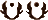

会使这次攻击命中也在迎击距离内的另一个目标 (GM选择)。
会使这次攻击命中也在迎击距离内的另一个目标 (GM选择)。
检定升级一难度。会使这次攻击命中也在迎击距离内的另一个目标 (GM选择)。
你迎击范围内的敌人对你的"肉搏"、"近战武器"，"光剑"检定加一个 。
。
根据下表增加难度(武器类型看使用什么技能)。
| 武器类型 | 修正 |
| 远程武器（轻型） | +1难度 |
| 远程武器（轻型） | +2难度 |
| 火炮 | +3难度 |
对俯卧角色的近战检定加一个。俯卧角色的近战检定加一 。
。
对俯卧角色的远程攻击检定加一个。
为了进行攻击，玩家执行组合检定。 首先，玩家指定一种武器作为主要武器。 在进行组合检定时，角色使用该武器进行攻击。然后玩家决定角色在使用主武器进行攻击时使用哪些技能和属性以及与次要武器（使用的其他武器）一起使用哪些技能和属性。最后， 他确定了目标。
为了组装此检查的骰子池，玩家需要比较每种武器本身用于进行攻击的技能，然后比较用于每种武器本身进行攻击的属性。 然后，他获取他具有较低等级的技能和他具有较低等级的属性，并使用该技能和属性来组合他的骰子池。 很可能技能或属性的等级是相等的，这样的话他就可以使用其中一个。 如果两项检查都使用相同的技能或属性，他只需使用该技能或属性即可。
然后，他比较了使用两种武器击中目标的两次战斗检查的难度。 并选择难度较高的检查。 然后，如果组合检查中的两项技能相同，他会将难度增加 1，如果组合检查中的两项技能不同，则难度增加 2，然后他会进行检查。
如果他成功了，他就会像往常一样用他的主要武器进行攻击。 他也可能会花费或 来使用他的辅助武器进行攻击。 如果两种武器都击中，他可能会花费额外的
来使用他的辅助武器进行攻击。 如果两种武器都击中，他可能会花费额外的 或来激活任一武器的特性。 每次命中都会造成基础伤害，每个未取消的成功+1点伤害。
或来激活任一武器的特性。 每次命中都会造成基础伤害，每个未取消的成功+1点伤害。
"肉搏"检定,基础伤害值为"筋力",距离:迎击，重伤值:5，混乱:1,击倒。角色可以选择给目标的疲劳上限而不是创伤上限造成伤害，但是伤害仍然会被吸收值减少。
自带一个[劣势]，[绝望]或两个[劣势]会使的武器坏掉。详细数值见下表。
| 大小 | 伤害 | 重伤 | 距离 | 负重 | 特性 | 示例 |
| 小 | +1 | 5 | 迎击 | 1 | - | 瓶子、小石头、板手 |
| 中 | +2 | 5 | 迎击 | 3 | 笨重2 | 大石头、椅子、萤幕 |
| 大 | +3 | 5 | 迎击 | 4 | 笨重4 | 铲子、大树枝、桌子、箱子 |
当角色对轮廓比自己大2点或以上的目标进行攻击时，他的检定难度会降低1分。 当角色对轮廓比自己小2点或更多点的目标进行攻击时，他会将检查的难度增加1。 （载具和星舰在轮廓差异较大的目标上射击时会更加困难，但当涉及到角色时，检查仅因尺寸而有所修改。）
| 体型差异 | 示例 |
| 0 | 贾瓦人、伊沃克人。 宇航技术机器人。 任何较小的生物。 |
| 1 | 大多数人形物种。 |
| 2 | 湿背蜥、万帕兽、汤汤兽、班萨兽，大多数都是骑乘动物。 |
| 3 | 兰克兽，克雷特龙，其他大型危险生物 |
| 4 | 银河系中有些生物比列出的生物还要大。 |